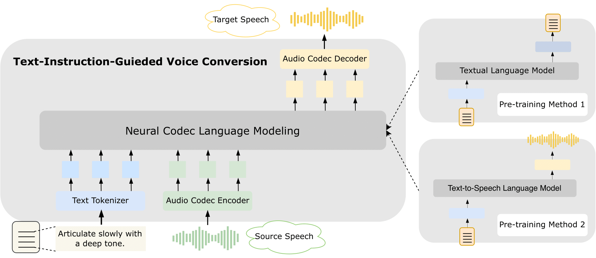

Toward General-Purpose Text-Instruction-Guided Voice Conversion
[Paper]
[Name]
Abstract
This paper introduces a novel voice conversion (VC) model, guided by text instructions such as articulate slowly with a deep tone or speak in a cheerful boyish voice.
Unlike traditional methods that rely on reference utterances to determine the attributes of the converted speech, using text instruction adds versatility and specificity to voice conversion.
The proposed VC model is a neural codec language model which processes a sequence of discrete codes, resulting in the code sequence of converted speech.
It utilizes text instructions as style prompts to modify the prosody and emotional information of the given speech.
In contrast to previous approaches, which often rely on employing separate encoders like prosody and content encoders to handle different aspects of the source speech, our model handles various information of speech in an end-to-end manner.
Experiments have demonstrated the impressive capabilities of our model in comprehending instructions and delivering reasonable results.
Demo for Dataset: Here
Model Overview

The overview of our framework. Conditioned on the given textual instruction and source speech, our model is able to generate sequences of discrete audio codes, which can be decompressed to the waveform of target speech.
Samples in Abstract and Introduction
Model Configurations: Text-Scratch
EnCodec Decoder: Adopt the original decoder of EnCodec to convert codec to speech.
Diffusion Decoder: Utilize the multi-band diffusion model [1] to convert codec to speech.
| Instruction | Source Speech | Target Speech (EnCodec Decoder) |
Target Speech (Diffusion Decoder) |
|---|---|---|---|
| Articulate slowly with a deep tone. | |||
| Speak in a cheerful boyish voice. | |||
| Speak as if you’re telling a bedtime story to a child. | |||
| Adopt the tone of a news anchor delivering breaking news. |
Emotion-Related Samples
Default: Adopt the original decoder of EnCodec to convert codec to speech.
| Instruction | Source Speech | Target Speech (Text-Text) |
Target Speech (TTS-TTS) |
Target Speech (Text-Scratch) |
|---|---|---|---|---|
| A slow sad moving female bass appeared in a low volume. | ||||
| Ask a cheerful sound very loud, the boy quickly talk about it. | ||||
| Her cheerful voice was fast and low. | ||||
| The carl makes a hoarse clamour. | ||||
| Women bass and quiet, she grunts that. | ||||
| Give me a sad loudly and contrabass man's voice. | ||||
| A male spoke: quietness and fast and blue. | ||||
| The male treble sadly said quickly for us, his volume is very low. |
Audio-Effect-Related Samples
Default: Adopt the original decoder of EnCodec to convert codec to speech.
| Instruction | Source Speech | Target Speech (Text-Text) |
Target Speech (TTS-TTS) |
Target Speech (Text-Scratch) |
|---|---|---|---|---|
| Add a profound sense of spatial dimension for a more immersive audio experience. | ||||
| Install echo effect to the audio element. | ||||
| Enhance the audio's spatial dimension and depth. | ||||
| Amp up the echo effect on the audio. |
Prosody-Related Samples
Default: Adopt the original decoder of EnCodec to convert codec to speech.
| Instruction | Source Speech | Target Speech (Text-Text) |
Target Speech (TTS-TTS) |
Target Speech (Text-Scratch) |
|---|---|---|---|---|
| Make a slight modification to the audio playback speed to slow it down. | ||||
| Drop the pitch of the audio slightly. | ||||
| Make the audio pitch moderately lower. | ||||
| Lower the pitch of the audio by a significant degree. | ||||
| Increase the audio speed to an excessive degree. | ||||
| Vastly elevate the audio's pitch. | ||||
| Amplify the audio's pitch significantly. |
Analysis of Generalization
Default: Adopt the original decoder of EnCodec to convert codec to speech.
| Instruction | Source Speech | Target Speech (Text-Scratch) |
|---|---|---|
| Add reverberation to the audio. | ||
| Say in whispering style. | ||
| Add reverberation to the audio and say in whispering style. | ||
| Please enhance the speech's spatial dimension and depth. | ||
| Please say in sad tone. | ||
| Please enhance the speech's spatial dimension and depth and say in sad tone. |
Analysis of Adverbial Modifiers (I)
Default: Adopt the original decoder of EnCodec to convert codec to speech.
| Instruction | Source Speech | Target Speech (Text-Scratch) |
|---|---|---|
| Decrease the speed of the speech slightly. | ||
| Decrease the speed of the speech. | ||
| Decrease the speed of the speech notably. | ||
| Decrease the speed of the speech extremely. | ||
| Decrease the volume of the speech slightly. | ||
| Decrease the volume of the speech. | ||
| Decrease the volume of the speech notably. | ||
| Decrease the volume of the speech >extremely. |
Analysis of Adverbial Modifiers (II)
Default: Adopt the original decoder of EnCodec to convert codec to speech.
| Instruction | Source Speech | Target Speech (Text-Scratch) |
|---|---|---|
| Please say it with slightly sad tone. | ||
| Please say it with sad tone. | ||
| Please say it with extremely sad tone. | ||
| Please say it with slightly happy tone. | ||
| Please say it with happy tone. | ||
| Please say it with notably happy tone. | ||
| Please say it with extremely happy tone. |